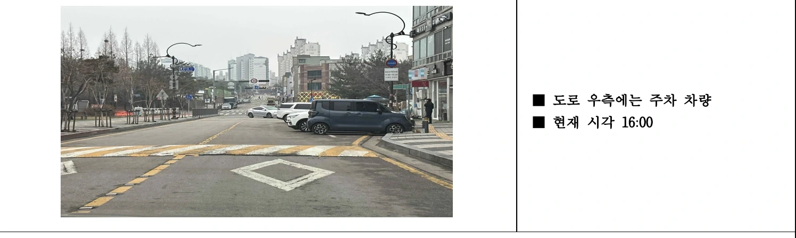

702. Which of the following pairings of information and interpretations from the given situation are incorrect? (Select TWO)

- ①A vehicle parked on the right side of the road - This is a parking violation.
- ②A pedestrian crossing – There is a crosswalk ahead.
- ③Solid yellow line on the right side of the road - Parking is prohibited, but stopping is allowed.
- ④Sidewalk - Bicycle riders must ride on the sidewalk.
- ⑤Speed bump - It is advisable to slow down.
Show answer
Answer
③ Solid yellow line on the right side of the road - Parking is prohibited, but stopping is allowed.
④ Sidewalk - Bicycle riders must ride on the sidewalk.
Reference
The solid yellow line is a no stopping or parking sign (Road Traffic Act Enforcement Rules [Appendix 6] Serial No. 516). Parking is prohibited except during permitted parking times. Drivers of bicycles, etc., must ride along the right edge of the road in places where bicycle paths are not installed (Article 13-2, Paragraph 2 of the Road Traffic Act). However, children, the elderly, and the physically disabled may ride bicycles on the sidewalk (Article 13-2, Paragraph 4, No. 1 of the Road Traffic Act).
Reference text is a machine translation for study.